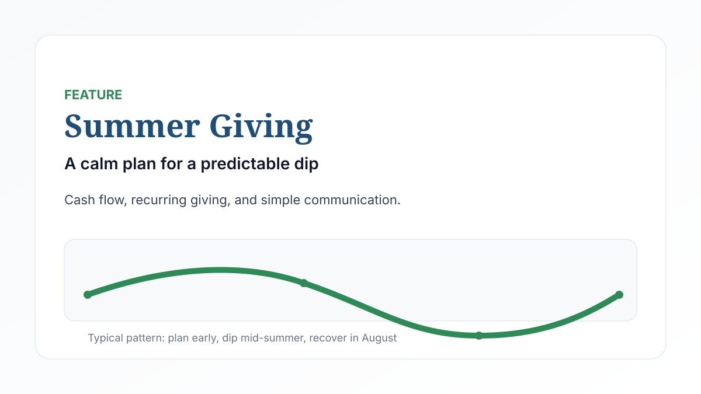
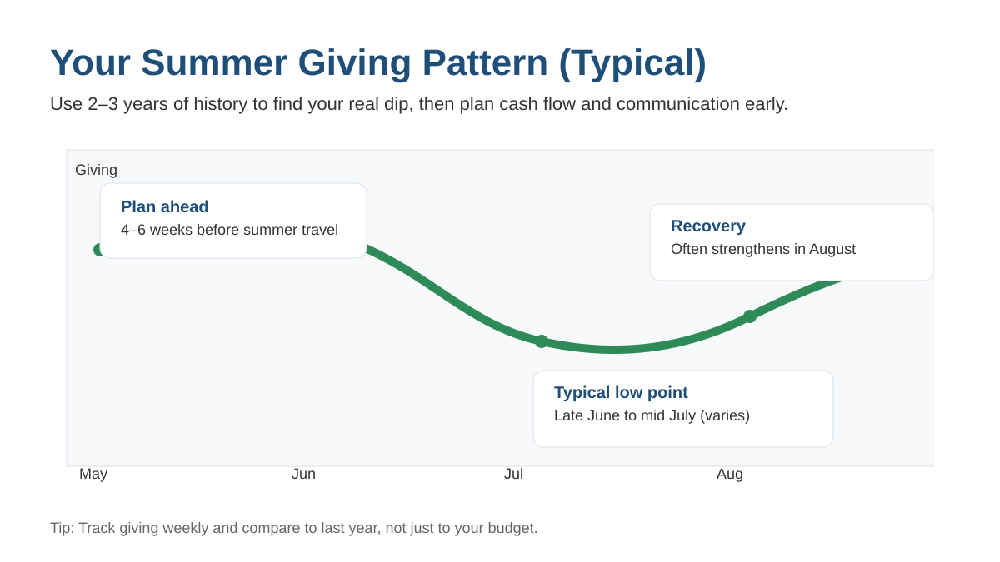
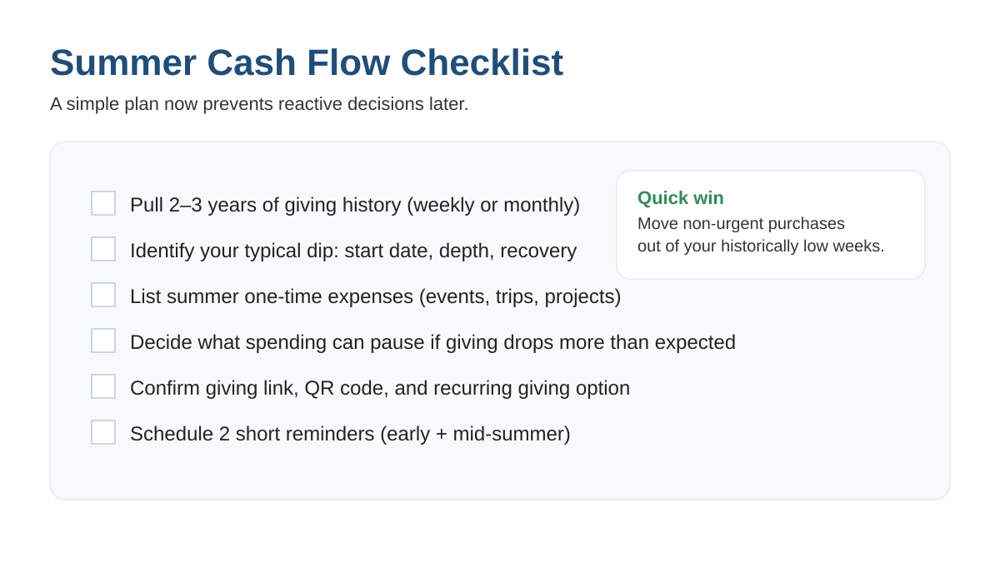
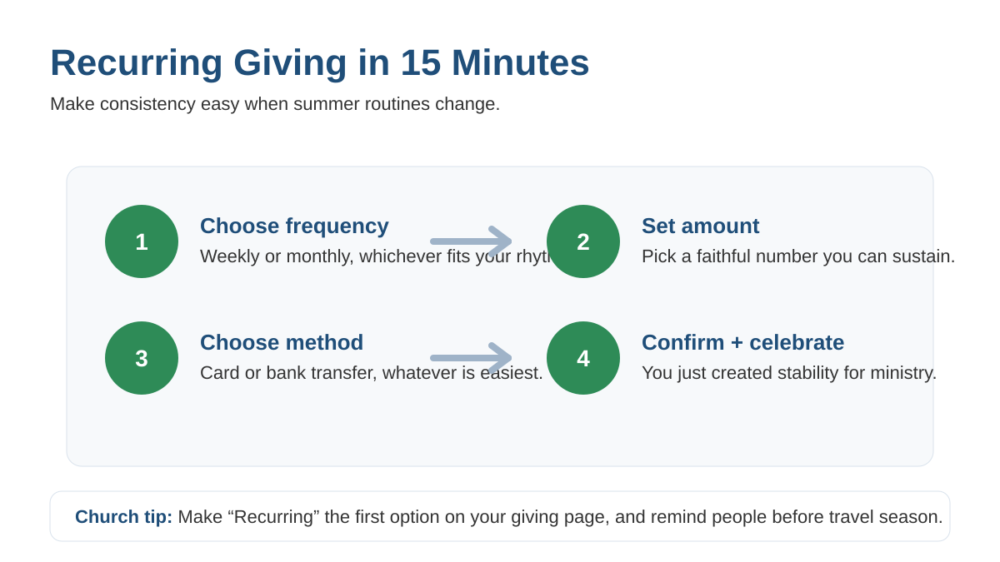

Every church feels it. Attendance patterns shift, families travel, routines loosen, and giving often dips in June and July. The problem is not that people stop caring. The problem is that momentum gets interrupted, and most churches do not plan for it early enough.
Bottom line: a calm plan now prevents panic later.
The good news is that a summer slowdown is a forecastable event. Forecastable problems are the easiest to prepare for. “The plans of the diligent lead surely to abundance.” (Proverbs 21:5)
1) Start with the truth (not the anxiety)
Before you change anything, pull the last 2 to 3 years of giving by week (or month). Answer three questions:
- When does the dip usually start?
- How deep does it typically go (percentage)?
- When does it recover?

2) Build a summer cash flow plan (not just a budget)
A budget tells you what you plan to spend. Cash flow tells you whether you can pay the bills when giving is uneven.
- Identify one-time summer expenses (events, trips, projects).
- If possible, move non-urgent spending out of historically low weeks.
- Decide ahead of time what you will pause if giving drops more than expected.

Quick win
Decide your “if-then” plan now. If giving dips by X%, then we pause Y expense. Calm decisions beat frantic ones.
3) Teach consistency, not crisis
The most effective giving “push” is often not a push. It is steady discipleship. Summer changes routines, so people need a gentle reminder that faithfulness can stay consistent even when schedules change.
“Each one must give as he has decided in his heart, not reluctantly or under compulsion, for God loves a cheerful giver.” (2 Corinthians 9:7)
4) Make recurring giving the easy default
If you only do one thing, make it this. Recurring giving stabilizes ministry because it works with human behavior, not against it. People often forget when routines break.
- Make recurring giving the first option on your giving page.
- Explain it in one sentence during the service once a month.
- Send one clear email with a simple setup link and a short “why it matters” paragraph.

5) Communicate early, and keep it simple
Do not wait until giving drops.
- 4 to 6 weeks before summer travel season: a short reminder about online and recurring giving.
- 2 to 3 weeks before: a short “summer ministry focus” update so people know what they are funding.
6) Share a mid-year ministry update (with gratitude)
People give more consistently when they can see the fruit. Keep it simple:
- 2 to 3 stories of impact
- 3 numbers that matter (baptisms, groups, local outreach, next-gen participation, benevolence)
- 1 clear next step (recurring giving, one-time summer gift, serving opportunity)
7) Tighten the giving experience (especially in summer)
- Is the giving link easy to find on your website?
- Does your slide include a QR code that actually works?
- Is your offering moment under 20 seconds, and does it mention online and recurring options?
- Are finance processes covered when key volunteers are out?
8) Optional: set a “Summer Strength” goal
Some churches do well with a positive, time-bound goal (funding summer outreach, next-gen ministry, or a specific need). If you do this, keep it specific, share progress weekly, and celebrate without pressure.
Copy-and-paste language (email or announcement)
“Summer changes routines, but ministry does not stop. If you travel or your schedule shifts, you can keep your giving consistent through online or recurring giving. Thank you for fueling what God is doing here, all year long.”
Next step
Start with one question: What would it look like for generosity to stay consistent, even when attendance is inconsistent? Build your plan around that, and you will lead through summer with clarity.